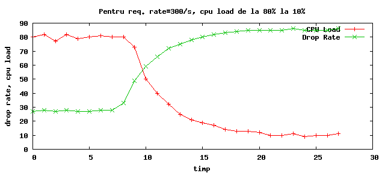
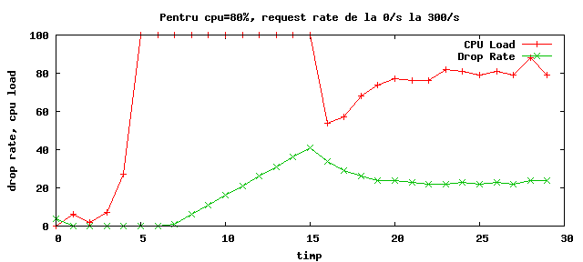
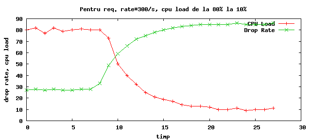
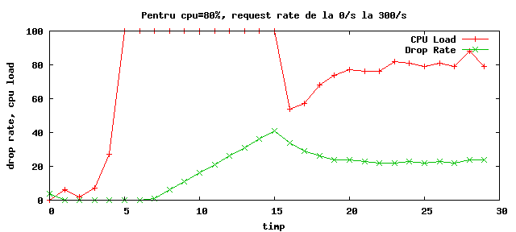

Two main changes went into the ratelimit module:
The patched module is available in the 03_ratelimit branch of the ser_ims repository, at
OpenIMSCore: OpenIMSCore SVN Area
The modified module
There is support for adding any SIP method as opposed to the request rate limits for
REGISTER, INVITE, SUBSCRIBE which were originally supported.
The modified modparam format is:
modparam("ratelimit", "pipe", "pipe_no:algorithm:limit")
modparam("ratelimit", "queue", "pipe_no:method")
The pipe/queue policy has been lifted from BSD's
ipfw manual, with some simplifications. In
principle, each specified method is associated with its own queue and a number of
queues are connected to a certain pipe.
2.1. Queues
The queue modparam format does not include a queue id because queues are appended to
the queue list in the order in which they appear in the .cfg file. Pipes do require
an id simply for clarity (because you have to assign queues to them).
The queue model in ipfw contains a number of other parameters which for now have
not been considered (notably weight).
To specify a queue that accepts all methods, use * instead of METHOD. As queues
are matched against request methods, you will usually want to have this as the last
queue added or other queues with specific methods will never match. At this time,
glob or regexp patterns are not supported.
2.2. Pipes
A pipe is characterised by its algorithm and limit (bandwidth, in ipfw terms). When
specifying a limit, the unit depends on the algorithm used and doesn't need to be
spedified also (eg, for TAILDROP, limit means packets/sec, whereas with the FEEDBACK
algorithm, it means [CPU] load factor).
As mentioned above, each pipe gets its own algorithm. At this point the available
algorithms are: NOP (nothing is dropped), TAILDROP, RED and FEEDBACK.
Additional algorithms can be implemented as needed.
2.3. Pipe algorithms
When calling the rl_check() function (it doesn't take any parameters), the queue
associated with the method is looked up and the request is pushed onto the pipe to
which the queue is connected. At this point, the rl_check() result will be drop or
allow depending on the output of the pipe's algorithm.
For example, using TAILDROP you can specify that MESSAGE and INVITE should have a
combined limit of 200 requests per second, while REGISTER and SUBSCRIBE should be
accepted as long as a 0.80 load average is maintained (using the FEEDBACK algorithm).
Using FEEDBACK for two different pipes is possible as long as the same desired
load factor is specified (it doesn't make enough sense to have _INVITE_S be allowed
till loadavg reaches 0.80 and _REGISTER_S till 0.50; or does it ?).
Parameters can be changed after startup, currently only via the xmlrpc interface: you
have to load the xmlrpc module and use the pidctl.py script (or some different xmlrpc
client) mentioned below.
2.4. Cfg example
This is the .cfg file that is being used to test the updated ratelimit module:
loadmodule "../ser_ims/modules/sl/sl.so"
loadmodule "../ser_ims/modules/xmlrpc/xmlrpc.so"
loadmodule "../ser_ims/modules/ratelimit/ratelimit.so"
loadmodule "../ser_ims/modules/fifo/fifo.so"
modparam("ratelimit", "pipe", "0:TAILDROP:200")
modparam("ratelimit", "pipe", "1:RED:100")
modparam("ratelimit", "pipe", "2:TAILDROP:50")
modparam("ratelimit", "pipe", "3:FEEDBACK:80")
modparam("ratelimit", "queue", "0:REGISTER")
modparam("ratelimit", "queue", "0:MESSAGE")
modparam("ratelimit", "queue", "3:INVITE")
modparam("ratelimit", "queue", "2:*")
modparam("ratelimit", "timer_interval", 1)
modparam("ratelimit", "load_source", "external")
modparam("fifo", "fifo_file", "/tmp/ser_fifo")
modparam("fifo", "fifo_dir", "/tmp/")
route {
if (method == "POST") {
dispatch_rpc();
break;
}
if (! rl_check()) {
rl_drop(50, 300);
break;
}
# act_busy();
sl_send_reply("200", "OK");
}
When running ser on different machines, one has to adjust the drop rates for the
static algorithms to maintain a sub-100% load average or packets start getting
dropped in the network stack. While this is not in itself difficult, it isn't
neither accurate nor trivial: another server taking a notable fraction of the cpu
time will require re-tuning the parameters.
While tuning the drop rates from the outside based on a certain factor is possible,
having the algorithm run inside ratelimit permits tuning the rates based on internal
server parameters and is somewhat more flexible (or it will be when support for
external load factors — as opposed to cpu load — is added).
This is what the FEEDBACK algorithm was added for.
3.1. The FEEDBACK algorithm
Using the PID Controller model
(see Wikipedia page), the
drop rate is adjusted dynamically based on the load factor so as the load factor
always drifts towards the specified limit (or setpoint, in PID terms).
As reading the cpu load average is relatively expensive (opening /proc/stat,
parsing it, etc), this only happens once every timer_interval seconds and
consequently the FEEDBACK value is only at these intervals recomputed. This in turn
makes it difficult for the drop rate to adjust quickly. See attached charts. Worst
case scenarios are request rates going up/down instantly by thousands — it takes up
to 20 seconds for the controller to adapt to the new request rate.
Generally though, as real life request rates drift by less, adapting should happen
much faster.
Generated (and unadjunsted :-D) charts for a few scenarios follow:
 




While testing the ratelimit changes these two tools were useful:
4.1. ctest
This generates harcoded SIP/UDP requests with a specified rate, reads the replies
and displays a realtime report on number of unreplied requests, number or
Retry-After: responses and so on. Changing the request rate is possible while
running.
Snapshot available at: http://patraulea.com/ratelimit/ctest-20070328.tgz
Repository at http://pike.fokus.fraunhofer.de/hg (dev)
4.2. pidctl
This is a python script that speaks xmlrpc and is useful when changing pipe and
queue params or pid params. It has a somewhat limited ui. It depends on a http
client lib also written in python, available from the download page below.
Snapshot available at http://patraulea.com/ratelimit/pidctl-20070328.tgz
Repository at http://pike.fokus.fraunhofer.de/hg (dev)
There is a TODO list in the patch for ser_ims/modules/ratelimit/ratelimit.c that is
more up to date. In principle: